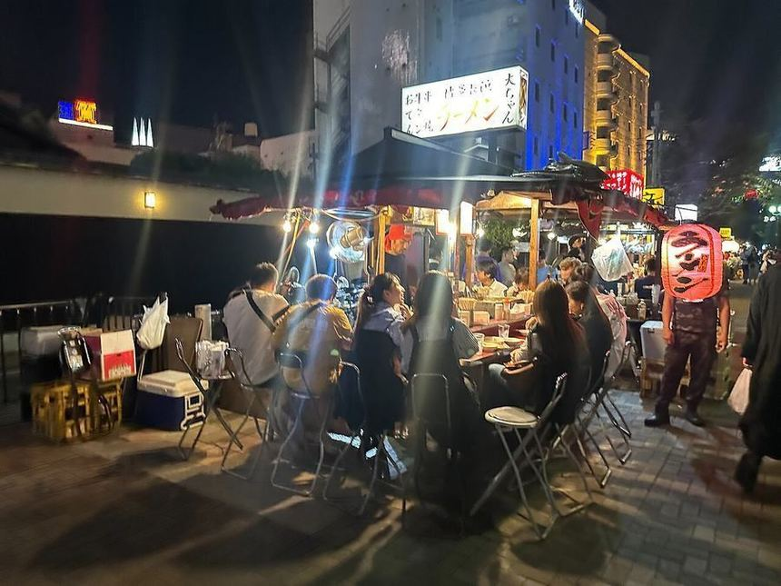
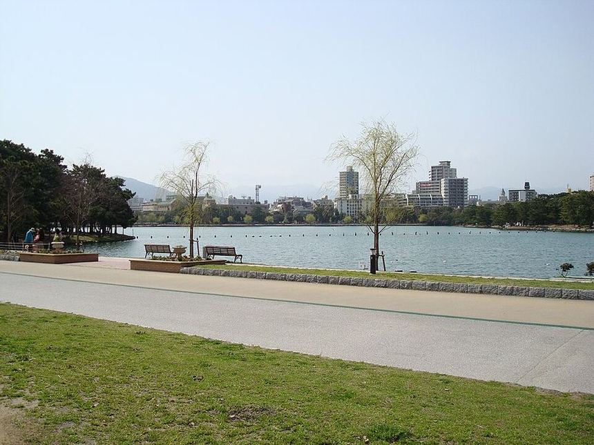
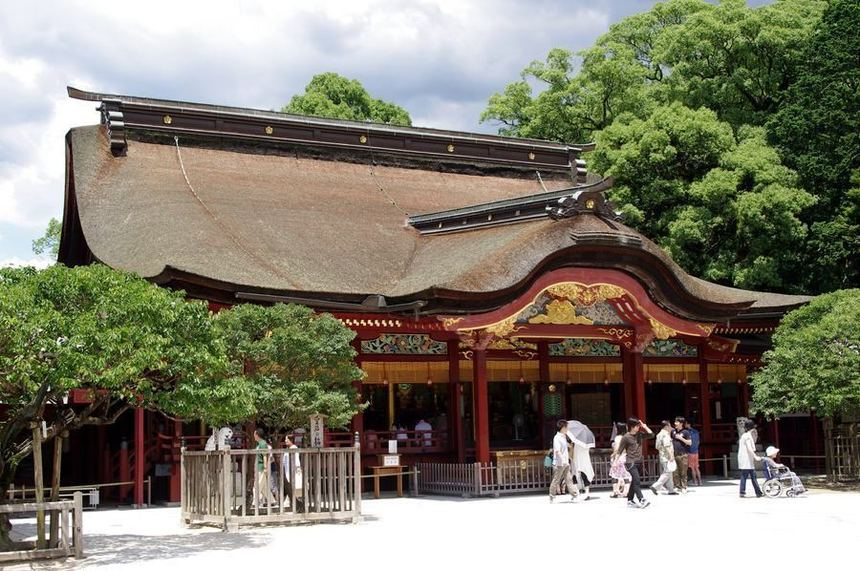

櫛田神社
Kushida Shrine
Hakata's guardian shrine since 757, and the home of the Yamakasa festival.
Free · TempleA first-timer's guide · 福岡
Tell it what you love — shrines and yatai, gardens and the sea — and it sequences a day-by-day route with the walking and transit between every stop, fares from the operators' own 2026 tables, and the places worth adding next door.

Selected for a first visit · 厳選
Four things this plan is built around — each one is a stop in the itinerary below.
櫛田神社
Hakata's guardian shrine since 757, and the home of the Yamakasa festival.
Free · Temple中洲屋台
Riverside food stalls after dark: ramen, yakitori and oden, one counter at a time.
Cash · Evening
大濠公園
A two-kilometre lake loop on an old castle moat, with a tea house on the island.
Free · Outdoors
太宰府
Tenmangu shrine and Kyushu's old capital, half an hour south of Tenjin.
Day trip · ¥480The planner · 旅程
Choose a length, a base and what you care about. The route re-sequences as you go, and every price below comes from a published 2026 fare table.